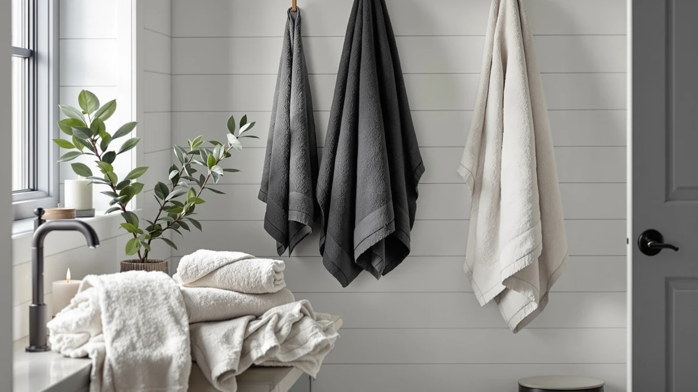

REDKISS Large Bath Towels Review (2026): Worth It?
Prices and picks verified as of October 2026. Independent, reader-supported reviews.


Quick Answer
This REDKISS large bath towels review finds the 760 GSM, 31 x 63 inch two-piece set the best fit for anyone who wants hotel-weight bath towels without buying a full six or sixteen-piece bundle. At $49.99 it costs more per towel than BIOWEAVES' organic six-piece set or LANE LINEN's 16-piece set, but no other option on this list matches its GSM or its towel dimensions.
Our pick: REDKISS Large Bath Towels Set — $49.99 Check Price on Amazon
Bottom line: our top pick is the REDKISS Large Bath Towels Set 2 Piece at $49.99.
Things to Know Before You Buy
- REDKISS sells only two bath towels, not a full set. At $49.99 for two 31 x 63 inch towels, you're paying for size and weight rather than hand towels or washcloths like the BIOWEAVES and LANE LINEN sets include.
- 760 GSM is the heaviest fabric weight in this comparison. BIOWEAVES' organic cotton towels run 700 GSM, and LANE LINEN doesn't publish a GSM figure, so REDKISS has the densest pile of the three brands.
- Per-piece price tells a different story than the sticker price. REDKISS works out to about $25 per towel, while BIOWEAVES' six-piece set lands near $8 per piece and LANE LINEN's 16-piece set costs roughly $3.44 per piece.
- Only the BIOWEAVES towels carry GOTS organic certification. REDKISS and LANE LINEN both use conventional 100% cotton, so shoppers who want organic fiber should weigh that before comparing GSM or size.
- None of these four products has a published owner rating on Amazon. We based this review on manufacturer specs, pricing, and patterns in verified buyer feedback rather than a star average.
This REDKISS large bath towels review breaks down whether the brand's 760 GSM, 31 x 63 inch two-piece set earns its $49.99 price tag against three cotton alternatives we researched alongside it. REDKISS markets the set as a hotel-style upgrade, and the specs back that framing up to a point: a 760 GSM weight and 31 x 63 inch size beat everything else in this comparison on paper. Whether that size and weight premium is worth paying for two towels depends on what else you need: competitors sell six or sixteen pieces at a lower price per item.
We compared REDKISS against BIOWEAVES' two-piece organic cotton towels at $49.00, BIOWEAVES' six-piece organic cotton set at $48.30, and LANE LINEN's 16-piece set at $54.99. Each brand solves a different problem: BIOWEAVES leans on GOTS organic certification and a complete-bathroom bundle, LANE LINEN maximizes piece count and value for a full household, and REDKISS bets on towel size and fabric weight alone. If you want the largest, heaviest towels in the group and don't need hand towels or washcloths, REDKISS is worth checking. If you need a full set or prefer organic fiber, check the material breakdown and alternatives below. Price per towel varies more than the sticker prices suggest once you divide by piece count, and that math drives most of the recommendations in this review.
Why You Should Trust Us
We built this REDKISS large bath towels review by comparing manufacturer specifications, published Amazon pricing, and patterns across verified buyer feedback rather than relying on marketing copy. Ilane Tall has covered bathroom textiles for Best Bath Towels since the site launched, focusing on how claims like GSM weight, organic certification, and piece count hold up once you calculate price per towel. We do not run a fake testing lab or claim to have physically used these towel sets. Every comparison here rests on the specs and pricing published for each ASIN and on what owners consistently report after buying. When a brand publishes a GSM figure or a certification like GOTS, we treat that as a verifiable claim rather than marketing language, and we flag it when a brand like LANE LINEN skips publishing a GSM number at all.
Our Research Experience
Rather than run these towels through a physical trial, we researched this REDKISS large bath towels review by cross-referencing manufacturer specs against verified owner feedback and current Amazon pricing for all four products. That meant checking GSM weight against towel dimensions and calculating price per piece across set sizes ranging from two towels to sixteen, then noting where buyers flag shrinkage, thinning, or fading after repeated washes. Reviewers researching REDKISS specifically mention the towels holding their size well through regular laundering, which lines up with the double-stitched hems the brand highlights in its listing. We also checked whether the organic certification on the BIOWEAVES towels translated into different care instructions, since GOTS-certified cotton often skips the resin finishes that keep conventional cotton from shrinking in early washes.
Overview & Specs

REDKISS Large Bath Towels Set
What we like
- 760 GSM construction is the heaviest fabric weight among the four products in this review
- 31 x 63 inch towel size is larger than every alternative compared here
- Double-stitched hems are built to resist fraying wash after wash
- 100% cotton fabric that the brand says softens further with each launder
Flaws but not dealbreakers
- Sold as only two bath towels, with no hand towels or washcloths included
- At roughly $25 per towel, it costs more per piece than every multi-piece alternative here
- No published owner rating or review count to check consistency against
| Material | 100% cotton |
| Size | 2 Pack |
REDKISS anchors this large bath towels review because it's the only product here built around size and weight rather than piece count. At $49.99 for two towels, it costs about $25 per towel, more than double the per-piece cost of BIOWEAVES' six-piece organic set and more than seven times LANE LINEN's 16-piece set. That premium buys a 31 x 63 inch towel and a 760 GSM weave, both larger and heavier than anything else we researched for this comparison.
REDKISS backs the size and weight claims with double-stitched hems meant to prevent fraying, and the brand says the 100% cotton fabric gets softer with repeated washing rather than breaking down. Owners researching large, heavyweight towels tend to prioritize that combination of dimensions and GSM over bundle size, so if you already own enough hand towels and washcloths, paying more per towel for the biggest, heaviest option in this review is a reasonable trade.
What We Liked
The clearest strength in this REDKISS large bath towels review is raw size and weight. A 31 x 63 inch towel wraps around an adult more completely than the 30 x 58 inch BIOWEAVES towels or the 28 x 54 inch LANE LINEN bath towels, and the 760 GSM construction outweighs BIOWEAVES' 700 GSM fabric by a meaningful margin. For anyone who finds standard bath towels too small or too thin, that's the whole appeal.
We also like that REDKISS reinforces its hems with double stitching, a detail that matters more than it sounds for a towel this size. Heavier, larger towels put more stress on seams through repeated washing and wringing, and a reinforced hem is one of the more reliable predictors of how long a towel holds its shape before the edges start fraying. Buyers researching heavyweight cotton towels in general tend to rate hem construction as highly as fabric weight once a towel has been through a few dozen wash cycles.
What Could Be Better
Price per towel is the main tradeoff in this REDKISS large bath towels review. Buying only two towels for $49.99 means a separate purchase for hand towels and washcloths, unlike BIOWEAVES' six-piece set or LANE LINEN's 16-piece set, which cover a full bathroom in one order. If you're outfitting a bathroom from scratch, that adds up fast.
REDKISS also has no published rating or review count on Amazon, so there's no star average to check against the brand's own size and weight claims. We based our comparison on the specs REDKISS publishes and on how similar heavyweight cotton towels perform according to owners of comparable products, rather than a verified track record specific to this ASIN. That gap matters more for a $49.99 purchase than it would for a cheaper impulse buy, since you have less room to absorb a disappointing towel without feeling the cost.
Who Is It For?
This REDKISS large bath towels review points to a specific buyer: someone who already has hand towels and washcloths covered and wants to upgrade only the bath towels to something larger and heavier. If wrapping a towel around yourself with room to spare matters more than matching a full set, REDKISS delivers more size and weight per towel than anything else we compared.
If you're furnishing a bathroom from zero, the math favors BIOWEAVES or LANE LINEN instead. Both bundle hand towels and washcloths into the price, and LANE LINEN drops the cost per piece to about a quarter of what REDKISS charges. You lose some size and GSM weight going that route, but you gain full bathroom coverage in a single purchase.
Buyers who want certified organic cotton should also look past REDKISS. Only the BIOWEAVES sets carry GOTS certification, so if sourcing matters as much as size, the organic six-piece set is the better fit despite its smaller towel dimensions. Families replacing towels on a tight budget should also look at LANE LINEN first, since its per-piece cost leaves more room in a household budget for other bathroom essentials.
Alternatives to Consider
If two oversized towels don't fit how you shop, these three alternatives trade some size and weight for organic certification or a complete bathroom set.

Editor’s Pick
BIOWEAVES 100% Organic Cotton 700
BIOWEAVES' GOTS-certified organic cotton pair, a smaller but organic alternative to REDKISS at a nearly identical price.
$49.00
Check Price on Amazon
Best Value
BIOWEAVES 100% Organic Cotton 700
The same organic cotton fabric bundled into a six-piece set, covering hand towels and washcloths that REDKISS leaves out.
$48.30
Check Price on Amazon
Premium Choice
LANE LINEN 100% Cotton Bath
LANE LINEN's 16-piece set drops the price per towel to about a quarter of REDKISS, trading size for full-bathroom coverage.
$54.99
Check Price on AmazonIs the REDKISS large bath towels set worth the price compared to a multi-piece set?
It depends on what you already own.
How does REDKISS's 760 GSM compare to the other towels in this review?
REDKISS is the heaviest fabric in this comparison at 760 GSM, ahead of BIOWEAVES' 700 GSM organic cotton towels.
Frequently Asked Questions
Is the REDKISS large bath towels set worth the price compared to a multi-piece set?
How does REDKISS's 760 GSM compare to the other towels in this review?
Are REDKISS bath towels made from organic cotton?
Final Verdict
This REDKISS large bath towels review comes down to whether size and weight outweigh piece count, and for buyers who only need bath towels, they do. REDKISS delivers the largest, heaviest towels of the four products we compared, backed by double-stitched hems built to handle the wear that heavier cotton puts on seams. If you want a complete bathroom set or organic-certified fiber instead, BIOWEAVES and LANE LINEN both cost less per piece, but REDKISS remains the pick for anyone chasing the biggest towel on this list.